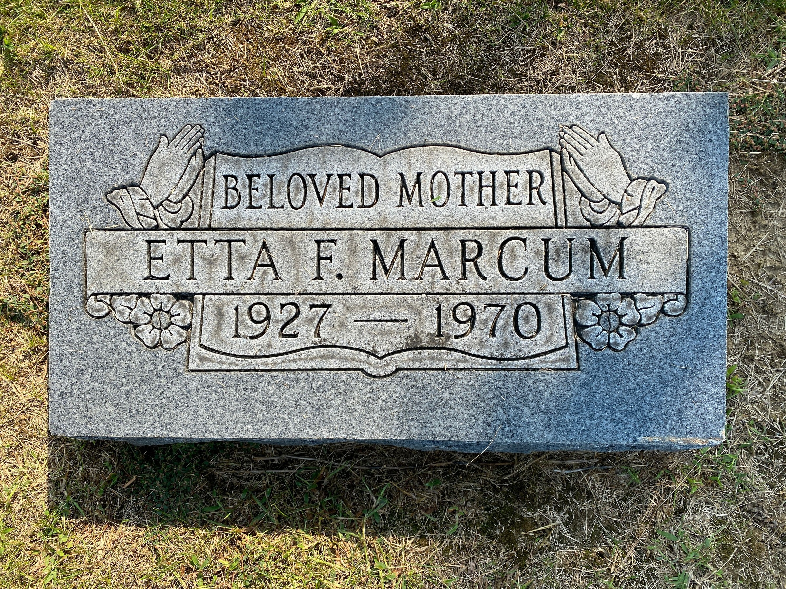
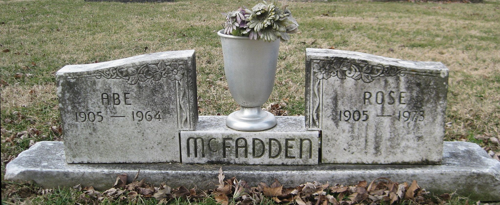
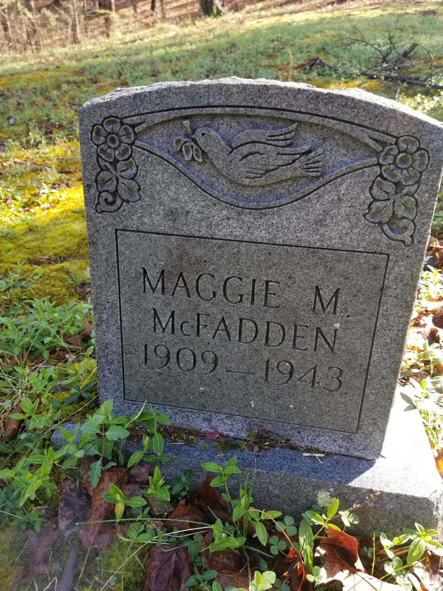
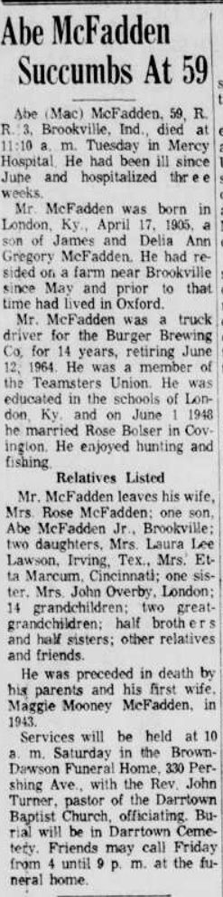

Etta F. McFadden
14 December 1927 – 6 July 1970
Quick Facts
Immediate Family
Children
- Deborah Marcum (1970 obituary form; possible match to FamilySearch “Deb Marcum,” not resolved)
- Beverly Jane Marcum (born 5 March 1956)
- Alton Marcum
- Douglas Marcum
- William Marcum
- Ronald Marcum
- Michael Lee Marcum (1962–1989)
Siblings
- Laura Lee McFadden Lawson Johnson (1925–2011)
- Abe McFadden Jr. (1926–1994)
Family Relationship Notes
Identity and marriage: The FamilySearch Memories newspaper scan (8 July 1970) identifies “Etta” as the beloved wife of Harold Marcum and names seven children. Beverly’s 1982 Hamilton County marriage license directly names Harold C. Marcum and Etta F. McFadden as her parents. Etta’s marker reads Etta F. Marcum, while Find a Grave and FamilySearch’s compiled Michael Marcum profile use Etta Fay McFadden Marcum. Together these strongly identify the subject with the existing Gen VI Etta F. McFadden profile.
Parents and siblings: Abe “Mac” McFadden’s 1964 obituary says his first wife Maggie Mooney McFadden died in 1943 and lists surviving daughters Laura Lee Lawson and Etta Marcum plus son Abe Jr. Laura Lee’s obituary says she was the oldest of three children of Abe and Maggie and names Etta Fay as a sister. Those sources support Abe and Maggie as Etta’s parents and Laura/Abe Jr. as siblings.
Children: Etta’s 1970 obituary names Deborah, Beverly, Alton, Douglas, William, Ronald and Michael Marcum. Beverly is supported by her 1982 marriage license. FamilySearch’s public profile for Michael Lee Marcum names Harold Clayton and Etta Fay as his parents; it lists a sibling “Deb Marcum,” a possible but not proven match to obituary “Deborah.” The remaining children are recorded only as the obituary spells them and are not separately profiled.
Bad Find a Grave marriage date: The Etta memorial states she married Harold in 1940, when both were about 12. That date is impossible and is not adopted. Her obituary establishes that she called Harold her husband, but no marriage date has been found.
On Family Tree Sites
Person Archive
Life Timeline
14 December 1927 · Birth date on Find a Grave memorial and marker year.
At least by 1956 · Daughter Beverly born; 1982 marriage license names Harold C. Marcum and Etta F. McFadden as her parents.
6 July 1970 · Died in Cincinnati; 8 July newspaper obituary lists death Monday, funeral arrangements and family.
8 July 1970 · Obituary published in Cincinnati, Hamilton County, Ohio (FamilySearch Memories scan).
Life Story
Etta Fay McFadden Marcum was born in Kentucky in 1927 and died in Cincinnati on 6 July 1970. Her newspaper obituary calls her wife of Harold Marcum and mother of seven children: Deborah, Beverly, Alton, Douglas, William, Ronald and Michael. Her marker reads Etta F. Marcum, 1927–1970. Daughter Beverly’s 1982 marriage license names Harold C. Marcum and Etta F. McFadden as her parents. Abe McFadden’s 1964 obituary and daughter Laura Lee’s obituary identify Etta as a daughter of Abe and Maggie Marie Mooney McFadden.
Photo Gallery





Sources and Evidence
- Hamilton County, Ohio, Marriage Records, Vol. 28, p. 1742, Hamilton County Probate Division — Dell Michael Fields and Beverly Jane Marcum, married 21 August 1982. Read directly from the original image. The license names Harold C. Marcum and Etta F. McFadden as the bride’s parents.
- Find a Grave memorial 243586112: Etta Fay McFadden Marcum, dates, burial and grave marker.
- Etta photo tab: “Beloved Mother” grave marker, added by JRD.
- FamilySearch Memories obituary scan, 8 July 1970; local transcription and stitched scan are archived.
- Abe McFadden’s 1964 obituary clipping names daughter Etta Marcum and first wife Maggie, deceased 1943.
- Laura Lee McFadden Lawson Johnson obituary names sister Etta Fay Marcum and identifies the three children of Abe and Maggie.
- FamilySearch compiled profile for Michael Lee Marcum names parents Harold Clayton and Etta Fay; derivative family-tree source.
- Beverly Jane Marcum’s live profile records the directly reviewed 1982 Hamilton County marriage license naming Etta F. McFadden as her mother.
- Father Abe “Mac” McFadden and his later wife Rose’s shared marker; not a marker for Maggie.
- Mother Maggie Marie Mooney McFadden’s headstone, 1909–1943.
- Abe McFadden’s 1964 obituary clipping names daughter Etta Marcum and first wife Maggie.
Research Notes and Open Questions
- Etta’s 1970 clipping gives her death as 6 July and says it was published 8 July. Her headstone shows 1927–1970 but not day/month dates. Find a Grave gives 14 Dec. 1927–6 July 1970.
- The clipping names seven children; Beverly’s parentage is supported by the 1982 license, Michael’s parents are named on a compiled FamilySearch profile, but other children have not been individually bridged. Keep “Deborah” separate from compiled “Deb Marcum” until identity is resolved.
- Find a Grave’s 1940 spouse date for Harold is incompatible with their dates and must not be copied into the profile. No verified marriage date located.
- Abe McFadden’s 1964 obituary and Laura Lee’s obituary identify Etta as a daughter of Abe and Maggie; this is the working Gen VII parent assignment.
- No individual portrait or identified family snapshots were found. Her grave marker and newspaper obituary are shown as such, not labeled as portraits.
DNA
No DNA matches linked yet.
Family Notes
No family-notes link is listed on this profile.
Profile created 17 November 2026 from Dell Michael Fields and Beverly Jane Marcum's 1982 Hamilton County marriage license (Vol. 28, p. 1742), read from the original image.